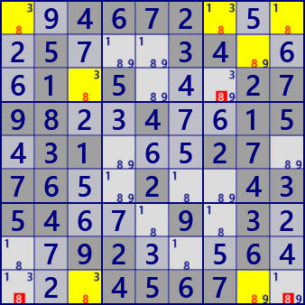
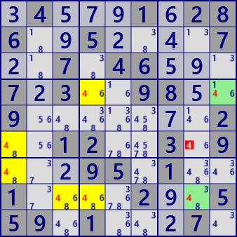
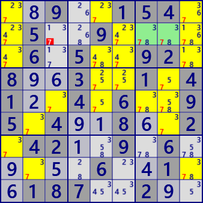

(Finned) Franken/Mutant Fish
Fish is an algorithm based on Locked of two house groups of rows and columns (or columns and rows).
Cell numbers that can be excluded by Locked are explained with the concept of BaseSet and CoverSet.
The definition of Nth order fish is shown again.
N-th fish
Focus on the digit X. Select N houses with N or fewer X(BaseSet),
and if N different House(CoverSet) completely contain BaseSet, BaseSet is in Locked.
Candidate digit X in the position to break Locked can be excluded.
Fish's BaseSet/CoverSet is a row/column (or column/row),
but BaseSet and CoverSet have no conditions of "row", "Column".
The combination of row and column also satisfies the condition.
BaseSet and CoverSet also satisfy the condition "row and block", "column and block".
Even if "row/column/block" is mixed, the condition is satisfied.
However, there is no overlap between the House groups making up BaseSet and
CoverSet also has no overlap(overlapping cases will be shown later).
These Fish with mixed rows and blocks or columns and blocks is named Franken Fish.
Also, the type with mixed rows/columns/blocks is named Mutant Fish.
Franken/Mutant Fish also has a type with fin.
There is also Franken/Mutant Fish with fins.
Define cells/candidate numbers included in BaseSet and not included in CoverSet as Fin.
It is assumed that there is a cell/candidate number included in CoverSet and not included in BaseSet and this is true.
At the same time, if Fin can be excluded, Finned Franken/Mutant Fish is established.
The above is summarized and the analysis algorithm is organized.
- Focus on the digit X
- Select BaseSet(B)
Select N from 27 House of Row/Column/Block, and make it BaseSet. And there is no overlap between N houses. Let B be the cell group included in BaseSet. - Select CoverSet(C)
Select N different from BaseSet from 27 House of Row, Column, and Block, and make it CoverSet. And there is no overlap between N houses. Let the cell group included in CoverSet be C. - without Fin
When CoverSet completely includes BaseSet. Complete inclusion is expressed as B-C = empty set. - with Fin
With Fin is represented as a set Fin = B-C = not empty set. If E = C-B = not empty set, and the element cell e of E contains the whole Fin(Fin may be plural cells) in the influence zone, the digit X can be excluded from e.
(Finned) Franken/Mutant Fish example

Franken SwordFish
digit : #8
BaseSet : r1 c38
CoverSet : r9 b13

Finned Franken SwordFish
digit : #4
BaseSet : r48 c1
CoverSet : r6 c4 b7
Fin : r4c9 r8c8
In GNPX, expand the search conditions and execute.
Paste the next 81 digits onto the grid and solve with /Solve/MultiSolve/
..4672....5...34...1.5...2798..4..15.31...27.76..2..4354...9.3...92...6....4567..
.4...1.286..5....7..7.46...7.3..98..9.......2..12..3.9...95.1..1....2..559.1...7.
The following figure is an example of higher order Finned Franken/Mutant Fish.
There are more simple solutions to these.
Finned Mutant Squirmbag
Digit: #2
BaseSet: r125 c2 b8
CoverSet: r48 c79 b2
FinSet: r5c4 r7c6

Finned Mutant Leviathan
Digit: #7
BaseSet: r8 c156 b346
CoverSet: r456 c9 b127
FinSet: r2c78
Paste the next 81 digits onto the grid and solve with /Solve/MultiSolve/
.38.6...96....93..2..43...1..61..9355.3.8.1...4........8.65..13...8..5.63.59..827
..9..154..5..9.....6.5..92.8..3..1.41..4.6..95.4..8..2.42..9.6.....6..1..187..2..
(Finned) Franken/Mutant Fish
The analysis program of Franken/Mutant Fish can be done by directly using the above algorithm as a code.
ExtFishSub is in the X-Wing(Fish) page.
public partial class FishGen: AnalyzerBaseV2{
//Frankenn/MutantFish
private int rcbSel=0x7FFFFFF;
public bool FrankenMutantFish( ){
for( int sz=2; sz<=4; sz++ ){ //Based on symmetry up to size 4
for( int no=0; no<9; no++ ){
if( ExtFishSub(sz,no,27,rcbSel,rcbSel,false) ) return true;
if( AnMan.CheckTimeOut() ) return false;
}
}
return false;
}
//FinnedFrankenn/MutantFish
public bool FinnedFrankenMutantFish( ){
for( int sz=2; sz<=7; sz++ ){ //Up to size 7 with Fin(5:Squirmbag 6:Whale 7:Leviathan)
for( int no=0; no<9; no++ ){
if( ExtFishSub(sz,no,27,rcbSel,rcbSel,true) ) return true;
if( AnMan.CheckTimeOut() ) return false;
}
}
return false;
}
}
Top